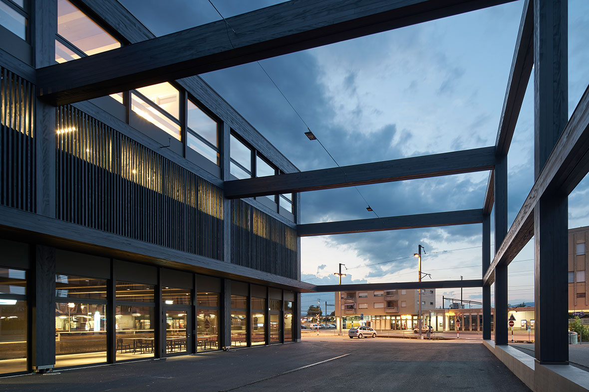
PRÄSENTATION STAPFERHAUS LENZBURG
Stapferbuehne Abend
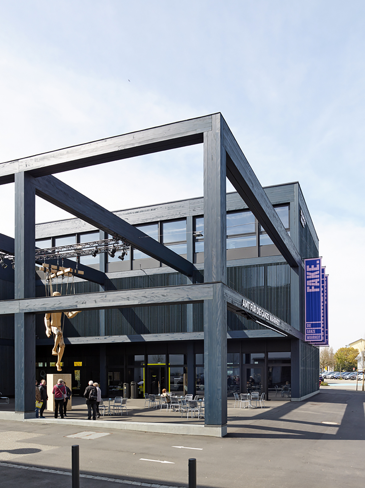
Stapfer Voransicht Bearbeitet
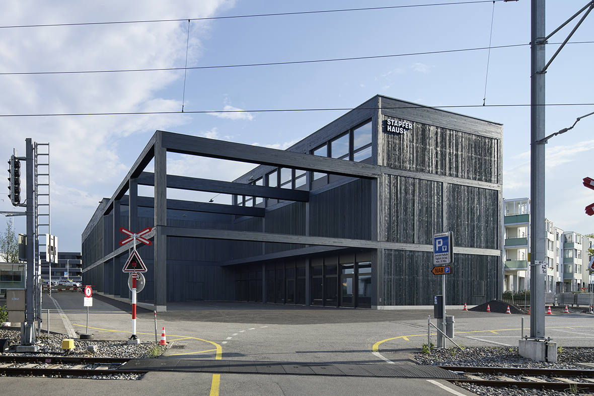
Stapferhaus
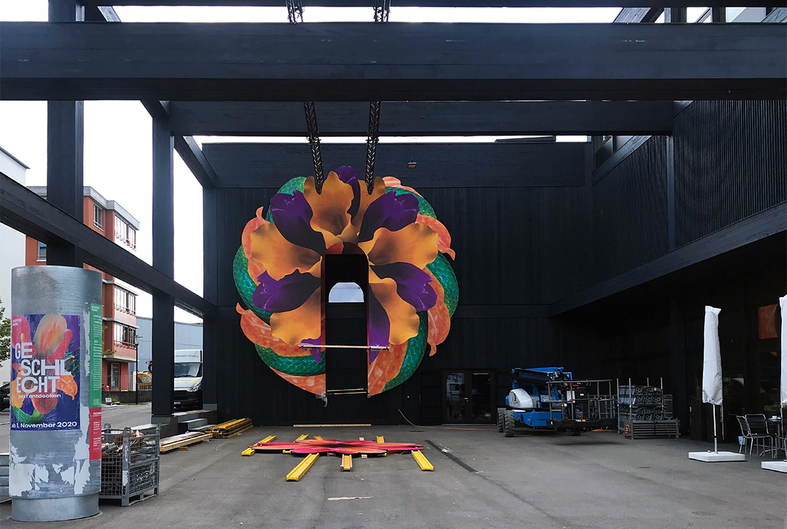
Stapferhaus
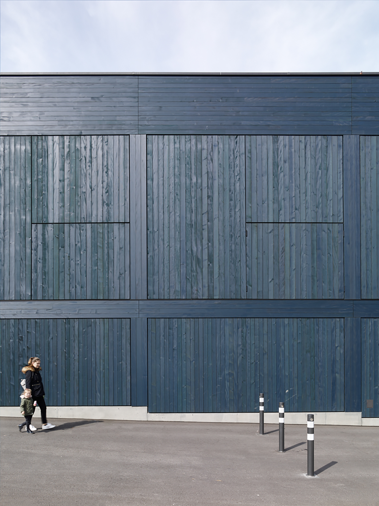
Stapfer Voransicht
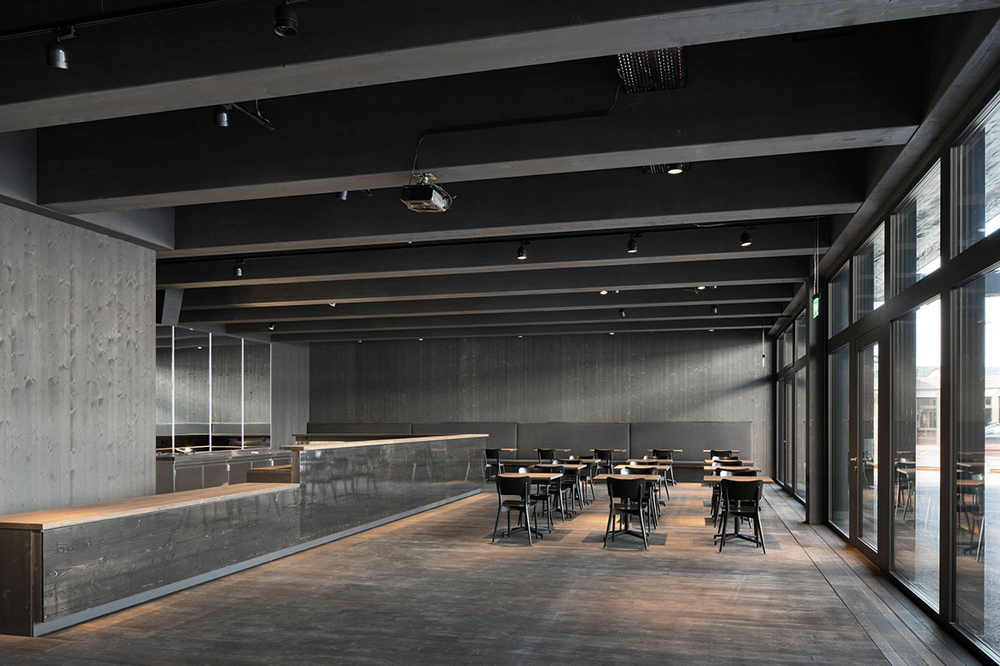
EG Empfang Cafe
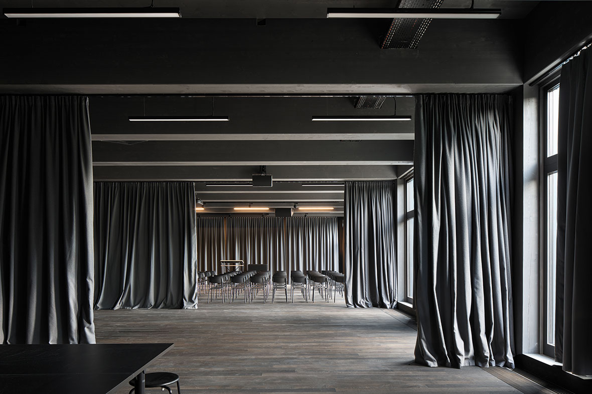
EG Veranstaltungsraeume

OG Ausstellung
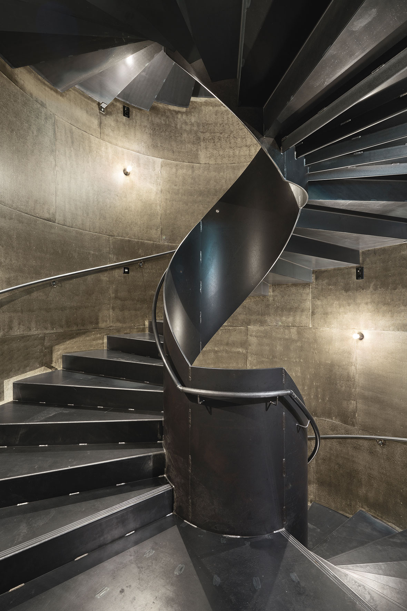
Haupttreppe
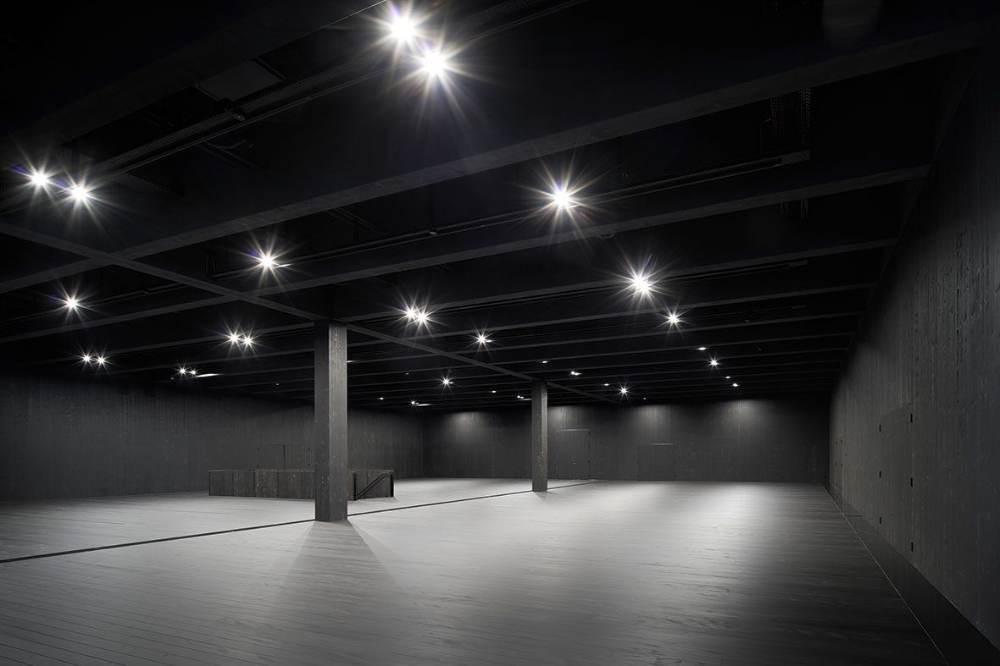
OG Ausstellungshalle
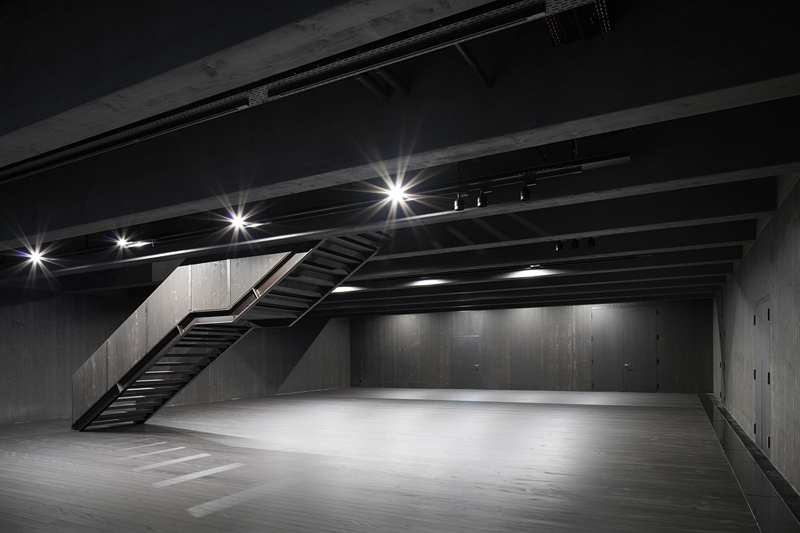
EG Ausstellungshalle

OG Bueros

Natur Foto Anita Affentranger

Umbau Natur

Good Umbau
EG Ausstellungshalle
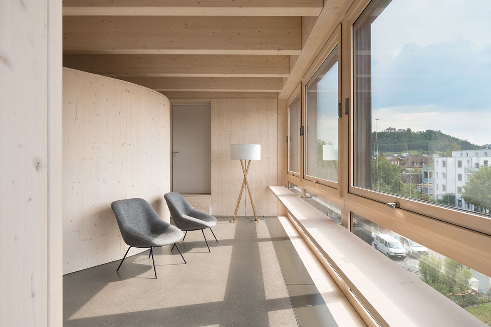
OG Betriebshaus Ausblick
- Titel
- Stapferhaus Lenzburg
- Auftraggeber:in
- Stiftung Stapferhaus Lenzburg
- Baumanagement
- Takt Baumanagement AG
- Landschaftsarchitektur
- Studio Vulkan
- Bauingenieur:in
- dsp Ingenieure & Planer AG
- Holzbau / Brandschutz
- Makiol Wiederkehr AG
- HLKS
- Hans Abicht AG
- Elektro
- Bhend Elektroplan
- Bühnen- und Medientechnik
- Tokyoblue
- Bauphysik
- Weber Energie und Bauphysik
- Fotos
- Ralph Feiner
- Ausstellung
- Désirée Good, Anita Affentranger